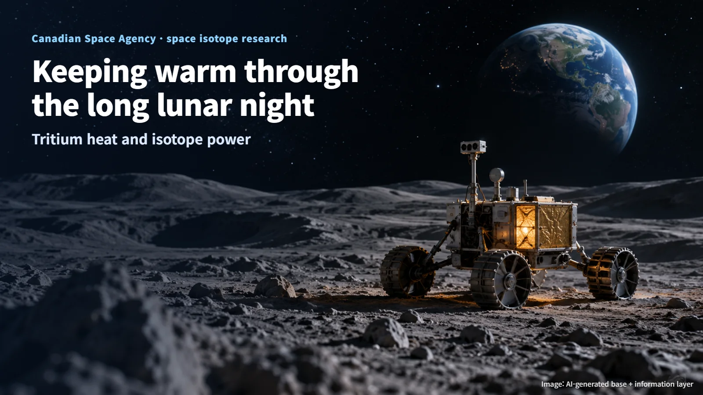
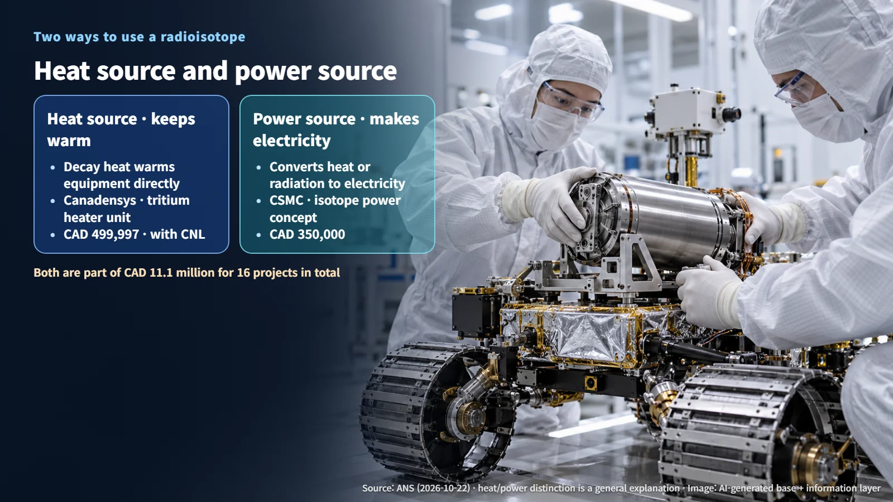
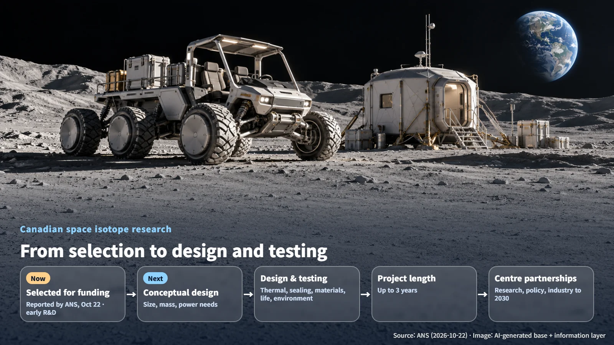

Canada · Space Nuclear
Keeping Warm Through the Long Lunar Night: Canada's Nuclear Heat and Power Research for Space
Two Canadian Space Agency projects study a tritium heater unit and an isotope power system to help lunar equipment survive the long night.
When most of us hear about Moon missions, we picture the rocket launch or the dramatic landing. Yet any piece of equipment that hopes to work on the Moon for a long time has to pass a quieter test: the long lunar night, when sunlight disappears completely. Keeping batteries and electronics warm while the Sun is gone is a real engineering challenge, and Canada is now approaching it with nuclear technology.
On October 22, 2026, the American Nuclear Society (ANS) reported on new research funding from the Canadian Space Agency (CSA) and on the launch of a new research centre for space isotopes. Let's walk through what the two funded projects aim to do, how heating and power differ, and which steps still lie ahead before this technology reaches the Moon.

Two Nuclear Projects Inside a CAD 11.1 Million Package
Through its Space Technology Development Program, the Canadian Space Agency is supporting 16 space projects with a combined total of CAD 11.1 million. That figure covers all 16 projects together, and two of those projects belong to the radioisotope field.
The first is led by Canadensys, which received CAD 499,997 to develop a tritium-based radioisotope heater unit. The second is led by CSMC, which received CAD 350,000 to study isotope power systems for spacecraft and lunar rovers operating in harsh space environments.
Both projects are at the early technology research and development stage. Projects of this type run for up to three years and are aimed at economic benefits over the following five to ten years. Picture a large bundle of space funding with two small nuclear seeds planted inside it. Seeds like these grow through years of careful engineering, and the early research phase is where that growth begins.
Heat Source or Power Source: What's the Difference?
To understand these projects, it helps to start with a basic property of radioisotopes. A radioisotope is a form of an element whose atomic nucleus is unstable, so over time it transforms into a different element on its own. This process is called radioactive decay, and the energy released during decay ends up as heat. You can think of it as a tiny stove that stays warm without burning any fuel.
There are two main ways to use this little stove. A heat source uses the released heat to warm nearby equipment directly. A power source converts heat or radiation into electricity to run equipment. In winter terms, a heat source is like a hand warmer, while a power source is closer to a small generator.

Canada's two projects each take on one of these paths. That is why their progress is measured by different yardsticks: the heater unit by how well it holds temperature, and the power system by how reliably it supplies electricity. Keeping these two functions clearly defined from the start gives each team a precise target to design and test against.
Warming With Tritium, Generating Electricity With Isotopes
Canadensys's heater unit runs on tritium. Tritium is a radioactive isotope of hydrogen whose nucleus carries two more neutrons than ordinary hydrogen. The goal of the project is to keep batteries and electronics at a working temperature through the long lunar night. Imagine the dark, frozen lunar surface, with only the inside of an exploration instrument holding a gentle, steady warmth.
The project is being carried out in collaboration with Canadian Nuclear Laboratories (CNL), and its development plan was first announced in July.
CSMC's project sits on the electricity side. With the Canadian Space Agency's lunar utility vehicle concept in mind, the team is working on a conceptual design for an isotope power system and assessing the size, mass, and power requirements it would need to meet. A conceptual design is like the rough sketch drawn before building a house: it sets the big picture of how large and how heavy the system should be, and how much electricity it must deliver.
Next Steps: Design, Testing, and a New Space Isotope Centre
Right now, both projects have been selected for funding. Whether they are ready for spaceflight, and whether they deliver the expected performance in space, will be confirmed through the design and testing work that follows. Along the way, the teams will need to secure the isotopes and work through requirements for thermal design, sealing, materials, service life, and environmental testing. The heart of the work is locking radioactive material securely inside the hardware and making it last in the punishing conditions of space. Each of these requirements is checked step by step, so that the hardware performs safely from assembly on the ground through its working life on the Moon.
The research base is growing at the same time. Last month, the Nuclear Innovation Institute launched the Canadian Centre for Space Isotopes. The centre will pursue collaboration across research, policy, and industry through 2030, bringing researchers, policymakers, and companies to the same table to develop space isotope technology together.
Two things are worth watching from here. The first is the release of design requirements, test plans, and performance evaluation results for each of the heat and power projects. The second is the specific projects, partnership structure, and target missions that the new centre will put forward.

Nuclear technology reaches much further than most people expect, from large power plants all the way down to a small heat source tucked inside lunar exploration equipment. The next time you read about a Moon mission, it may be worth picturing that small pocket of warmth inside the hardware, quietly carrying it through the long night.